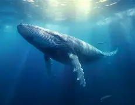

Blue Whale
Endangered
Estimated remaining: 10,000–25,000
Habitat
Blue whales are found in all major oceans — the Arctic, Atlantic, Indian, Pacific, and Southern Oceans.
Threats
- Ship strikes
- Noise pollution
- Climate change affecting krill availability
- Entanglement in fishing gear
- Past commercial whaling
Conservation efforts
International whaling bans, marine traffic regulations, protected areas, and ongoing research and monitoring programs.